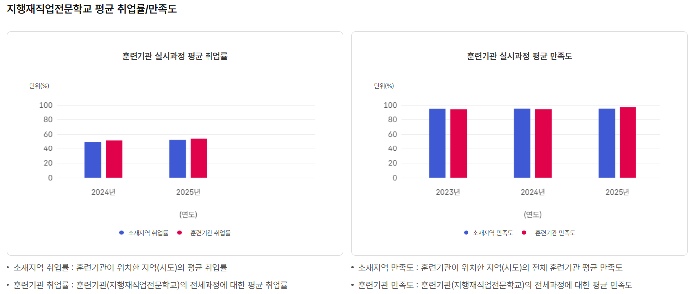
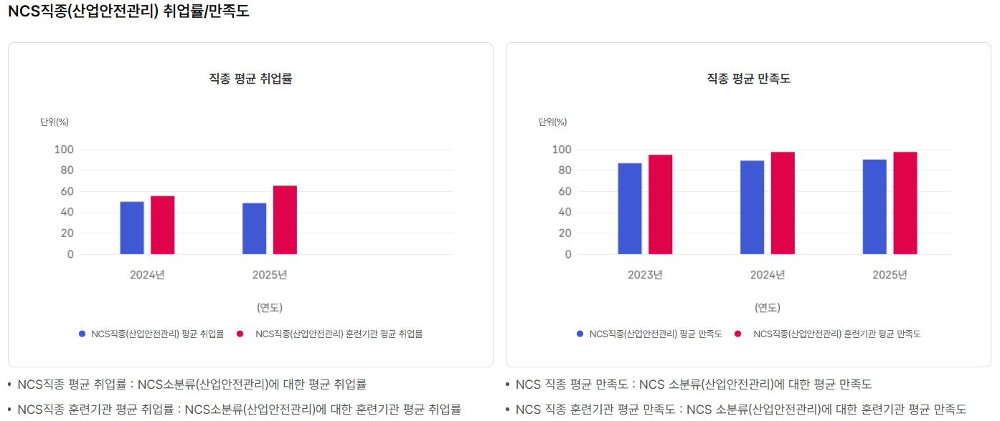
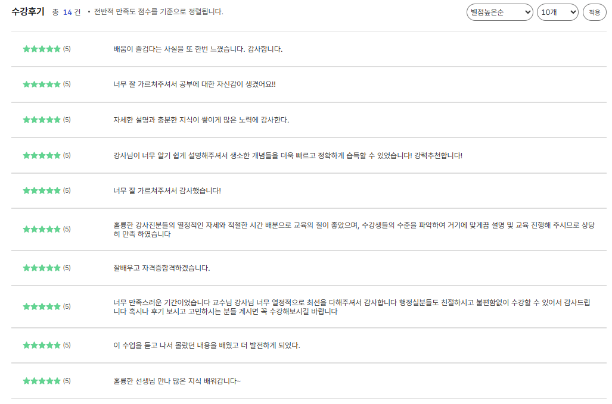

220시간, 자격증 시험을 준비하는 시간입니다
먼저 분명히 해두겠습니다. 이 과정이 응시자격을 만들어주지는 않습니다. 산업안전(산업)기사·위험물산업기사는 학력과 경력에 따른 응시자격이 따로 있고, 훈련 수료가 그 요건을 대신하지 않습니다.
이 과정이 하는 일은 다릅니다. 혼자 준비하면 수개월이 걸리는 범위를 교사가 짚어주는 구조로 압축하고, 그 시간에 훈련비 지원과 훈련장려금이 붙습니다. 승인 문서에 적힌 과정 목표도 "시험에 응시해 합격함으로써 선임 안전관리자 분야로 직무전환·이직"입니다.
내 응시자격, 30초면 확인됩니다
학력·전공·경력 직무분야·학점을 넣으면 산업안전·위험물·소방설비 6개 등급의 응시자격을 한 번에 판정합니다. 경력은 년수보다 어느 분야였는지가 먼저입니다 — 산업안전·소방설비(25.안전관리)와 위험물(18.화학)은 인정 범위가 다릅니다.
※ 근거: 국가기술자격법 시행규칙 [별표 11의2] 유사 직무분야. 관련학과 인정은 학과 명칭이 아니라 이수 교육과정 기준이며 종목마다 지정 학과가 다릅니다. 최종 확인은 큐넷 응시자격 자가진단 또는 학교 상담을 이용하십시오.
판정 결과가 애매하거나 경력 인정 여부가 헷갈리면?
왜 지금 안전 자격인가
안전관리는 경기에 따라 뜨고 지는 분야가 아닙니다. 중대재해처벌법이 2024년 1월 27일부터 상시근로자 5인 이상 모든 사업장에 적용되면서, 안전관리 인력 수요가 유행이 아니라 법으로 만들어졌습니다.
울산은 그 수요가 특히 큰 지역입니다. 석유화학·조선·완성차가 밀집해 있고, 위험물 취급 사업장이 많아 위험물 안전관리자 선임 수요도 함께 발생합니다. 다른 지역에서 자격을 따서 울산으로 오는 것이 아니라, 수요가 있는 곳에서 배우고 그 자리에서 지원하는 구조입니다.
얼마를 내고, 얼마를 받나
훈련비는 국비로 지원되고 수강생은 자기부담금만 냅니다. 산대특 자기부담금은 훈련비 300만원 이하 구간에서 10%이고, 그 위로는 구간별 정액입니다. 두 과정 모두 300만원 이하 구간에 해당합니다.
위험물 안전관리 양성
180시간 · 주간반
선임안전관리 향상
220시간 · 야간반
훈련장려금은 조건이 있습니다
월 20만원은 자동으로 나오지 않습니다. 단위기간 출석률 80% 이상이 조건이고, 출석률은 시간이 아니라 일수 기준으로 계산합니다. 지각·조퇴·외출은 3회가 모이면 결석 1일로 처리됩니다.
아래에 해당하면 훈련장려금은 지급되지 않습니다. 수강 자체는 가능합니다.
| 구분 | 수강 | 훈련장려금 |
|---|---|---|
| 구직 중 (실업급여 미수급) | 가능 | 월 20만원 |
| 실업급여 수급 중 | 가능 | 지급 안 됨 (이중수급) |
| 월 60시간 이상 근로 중 | 가능 | 지급 안 됨 |
| 야간반(220시간) 수강 | 가능 | 해당 없음 |
울산 남구 자기부담금 면제
울산 남구는 고용위기 선제대응지역으로 지정되어, 요건에 해당하면 2027년 1월 11일까지 자기부담금이 면제됩니다. 남구 소재 사업장에 재직 중이거나 남구에 3개월 이상 거주하신 경우가 해당됩니다. 남구 밖에 사셔도 남구로 출근하시면 대상이 될 수 있습니다.
※ 기간이 정해진 한시 조치이며, 종료되면 구간표대로 자기부담금이 다시 적용됩니다. 해당 여부가 애매하면 상담에서 확인해 드립니다.
※ 자료: 고용노동부 「산업구조변화대응 등 특화훈련」 사업 운영 지침(2026.1), 고용위기 선제대응지역 지정 공문
내 응시자격이 되는지, 자기부담금 면제 대상인지 확인하려면?
이래도 되나 싶은 것들
상담에서 가장 많이 받는 질문들입니다. 대부분은 장벽이 아닙니다.
어디로 오면 되나
울산 남구 북부순환도로 17, 남운프라자 5층(무거동). 울산대학교 인근이며 시내버스 접근이 쉽습니다. 주간반은 09:00 시작·16:00 종료라 출퇴근 정체 시간대를 피합니다.
※ 원거리에서 통학하실 계획이라면 편도 시간을 먼저 계산해 보십시오. 단위기간 출석률이 80% 미만이면 훈련장려금이 지급되지 않고, 중도포기 시 카드 한도가 차감됩니다.
수료생은 어디로 갔나
지행재직업전문학교 산대특 과정 수료생 중 취업이 확인된 인원의 취업처와 채용 형태입니다. 학교가 홍보용으로 만든 숫자가 아니라 고용노동부 보고용으로 집계한 자료입니다.
| 주요 취업처 | 확인 인원 |
|---|---|
| 현대자동차 | 7명 |
| 현대중공업 | 3명 |
| SK가스 · 삼양라면 · 태광산업 · DB손해보험 | 각 1명 |
| 그 외 지역 제조 · 건설 · 엔지니어링 | 다수 |
※ 훈련기간 2024.10~2025.12 과정 기준, 고용노동부 보고용 집계.
※ 취업이 확인된 인원 기준이며, 전체 수료생 대비 취업률이 아닙니다.
※ 취업 현황은 고용노동부 보고 시점에 맞춰 갱신되며, 최근 수료생의 취업 결과는 집계에 시차가 있습니다.


※ 왼쪽은 지행재직업전문학교 실시과정 평균과 소재지역(울산) 평균의 비교입니다. 오른쪽은 NCS 소분류 산업안전관리 직종의 직종 평균과 훈련기관 평균 비교로, 지행재 단독 수치가 아닙니다.
누가 가르치나
두 과정 모두 주교사 2인이 배정되어 회차 중 공백 없이 운영됩니다. 담당 교사는 개강 시 확정됩니다.
안전 3종 교사진 전체 보기
· 위험물기능장 3인 — 이장표 · 김춘근 · 이재옥
· 산업안전기사 4인 — 배희연 · 박도원 · 김춘근 · 이재옥
· 소방설비기사 2인 — 김춘근(전기·기계) · 이재옥(전기)
이재옥 교사 · 세진중공업 안전보건부 차장 22년(안전지도과 팀장, 조선소 현장 안전지도 팀리더, 소방·위험물 안전관리자, 노동부·안전보건공단·소방서 대관 업무 담당) / 위험물기능장 · 소방설비기사(전기) · 산업안전기사 · 가스산업기사 · 전기기능사 · 가스기능사 · 위험물기능사
수강생 평가


"산업안전과 위험물을 전혀 모르는 상태로 시작했는데, 강사님이 알기 쉽게 설명해주셔서 생소한 개념들을 더욱 빠르고 정확하게 습득할 수 있었습니다."
— 고용24 등록 수강후기
"이론에 현장 사례를 붙여 설명해 흡수가 빨랐고, 울산이라는 공업도시 특성에 맞는 과정이었습니다."
— 고용24 등록 수강후기
※ 자료: 고용24 훈련과정 정보 — (산대특) 산업현장 산업안전 및 위험물 관리실무자 지원과정 훈련성과
두 과정 중 어느 쪽인가
같은 날 개강하지만 대상과 시간대가 다릅니다. 훈련장려금은 주간반에만 나옵니다.
| 구분 | 위험물 안전관리 양성 | 선임안전관리 향상 |
|---|---|---|
| 대상 | 실업자주간반 | 재직자야간반 |
| 시간 | 09:00 ~ 16:00 | 19:00 ~ 22:00 |
| 요일 | 월~금 | 월~금 |
| 훈련시간 | 180시간 · 30일 | 220시간 · 74일 |
| 총 기간 | 약 6주 | 약 15주 |
| 개강일 | 9월 28일 | 9월 28일 |
| 정원 / 잔여 | 20명 / 5석 | 20명 / 5석 |
| 훈련장려금 | 월 20만원 | 해당 없음 |
| 자기부담금 | 115,380원 | 145,640원 |
신청은 4단계
052-267-3172 — 응시자격, 장려금 해당 여부, 자기부담금 면제 대상인지 확인해 드립니다. 통화가 어려우시면 상담 신청서를 남겨주셔도 됩니다.
고용24 온라인 신청 또는 울산고용센터 방문. 평균 7일 소요됩니다.
140시간 이상 장기 과정은 수강신청 전 훈련 진단·상담이 반드시 필요합니다. 두 과정 모두 해당되며, 이 단계를 빠뜨려 개강 직전에 막히는 분이 많습니다.
고용24(work24.go.kr)에서 "지행재직업전문학교"를 검색해 과정을 신청합니다. 준비물은 신분증과 본인 명의 계좌번호입니다.
자주 묻는 질문
먼저 전화로 확인하세요
응시자격이 되는지, 자기부담금 면제 대상인지,
어느 과정이 맞는지 5분이면 정리됩니다.
전화는 평일 업무시간에 연결됩니다. 야간·주말에는 신청서를 남겨주십시오.